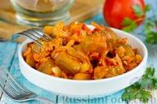
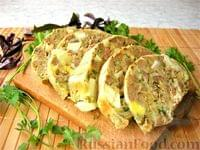
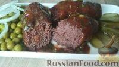
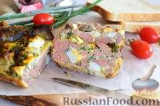
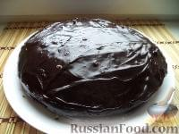

|  |
Гювеч (овощное рагу)Гювеч (гивеч) - сытное и очень вкусное блюдо балканской кухни, разновидность овощного рагу с баклажанами, болгарским перцем, помидорами. Готовится гювеч как с мясом, так и только из овощей. Можно подавать в теплом Продукты (на 3 порции): Баклажан (крупный) - 1 шт.; Перец болгарский - 1 шт.; Помидоры - 2 шт.; Морковь - 1 шт.; Лук репчатый - 1 шт.; Чеснок - 1-2 зубчика; Томатная паста - 1 ст. л.; Масло подсолнечное - 60 мл; Вода (кипяток) - 80 мл; Сахар - 1 ч. л.; Соль - по вкусу; Перец чёрный молотый - по вкусу. |
|  |
Румынский дроб из куриной печениДроб - это довольно простая в приготовлении закуска из куриной печени. Такое блюдо будет красиво смотреться на праздничном столе и может стать прекрасным дополнением к обеду или ужину. Это рецепт из раздела «вкусно, просто, сытно». Продукты (на 7 порций): Печень куриная отварная - 1 кг; Яйца вареные - 5 шт.; Яйца сырые - 2 шт.; Сметана - 200 г; Лук репчатый - 1 шт.; Петрушка свежая - 1 пучок; Крахмал - 1 ст. ложка; Мука - 200 г; Сода пищевая - 1 ч. ложка; Соль - по вкусу; Перец чёрный молотый - по вкусу; Масло растительное - 2 ст. ложки; |
|  |
МититеиМититеи - отличная альтернатива шашлыку. Вкусные, сочные колбаски с легкой ноткой чабреца, чесночным вкусом и ароматом - это что-то непередаваемое! Есть некоторые основные ингредиенты и особенности приготовления мититей, которые отличают их от других колбасок. Продукты (на 6 порций): Говядина (баранина) - 400 г; Сало - 100 г; Вода минеральная сильногазированная - 50 мл; Крахмал - 1 ч.л.; Сода - 1/3 ч.л; Чабрец - 1/2 ч.л.; Перец черный молотый - 1/2 ч.л.; Соль - 1/2 ч.л.; Лук - 1/2 шт.; Лавровый лист - 1 шт.; Масло растительное (для жарки) - 2-3 ст.л.; |
|  |
Дроб из куриной печени, по-румынскиДроб - традиционное румынское блюдо из субпродуктов баранины, которые перемалываются в фарш и заворачиваются в сальник. Но если вы не являетесь поклонником баранины, приготовьте дроб из куриной печени. А чтобы дроб был менее калорийным, можно исключить из состава сальник. Продукты (на 4 порции): Печень куриная - 400 г; Яйца - 4 шт.; Укроп - 10 г; Масло растительное - 1 ст. л.; Соль - по вкусу; Перец черный молотый - по вкусу. |
|  |
КоврижкаТрадиционная русская коврижка любима не только в России - перед вами румынский рецепт коврижки с пряностями. Постный десерт для праздничного дня. Продукты (на 8 порций): Для теста: Сахар (песок) - 1 стакан; Вода - 1 стакан; Мед - 2 ст. ложки; Сода - 1 ч. ложка; Какао (или кофе) - 2 ст. ложки; Мука - 1,5-2 стакана (сколько уйдет); Гвоздика - 5 шт. (по вкусу); Корица - 0,5 ч. ложки (по вкусу); Кориандр - 0,5 ч. ложки (по вкусу); Изюм - 0,5 стакана; Орех - 0,5 стакана; Масло растительное - 0,5 стакана; Масло (для смазывания формы) - 2 ст. ложки; Для глазури: Сахарная пудра - 150 г; Какао-порошок - 2 ст. ложки; Вода (горячая) - 3 ст. ложки; Маргарин растительный (мягкий) - 2 ст. ложки. |